Left: untouched binary threshold. Right: connected white regions colored for inspection (not proposed skin colors). Click a binary link for original dimensions. Browser previews are scaled.
Heuristic ranking favors threshold stability, boundary contrast and few speckles; it cannot recognize intended artwork or recover equal-luminance color boundaries. Tiny regions are counted, never removed. 512×384 previews use nearest neighbor only, not final vector rasterization.
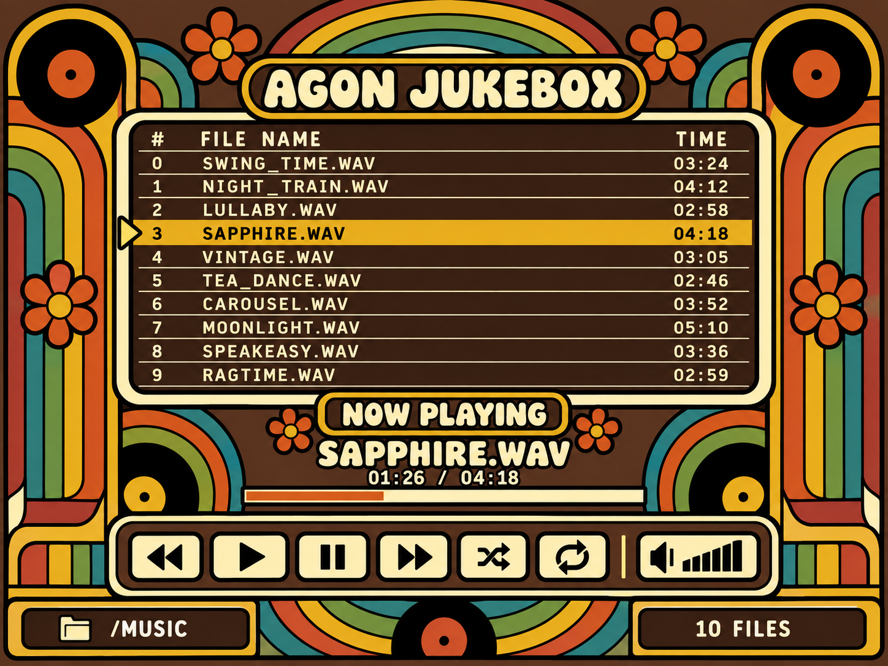
Score 99.6; 394 useful regions; 3 tiny regions; white 43.6%.
Full-resolution binary PNG · Grayscale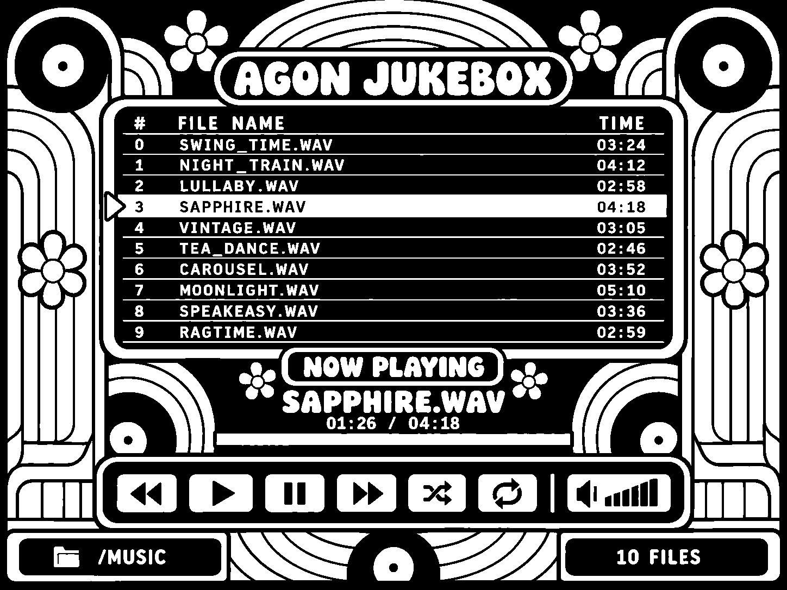
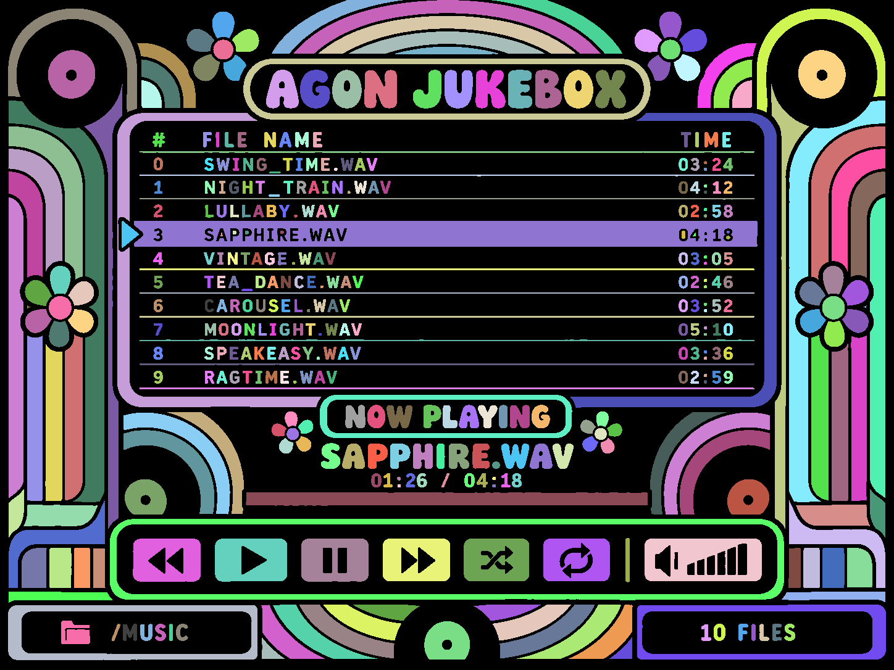
Score 98.1; 305 useful regions; 29 tiny regions; white 24.6%.
Full-resolution binary PNG · Grayscale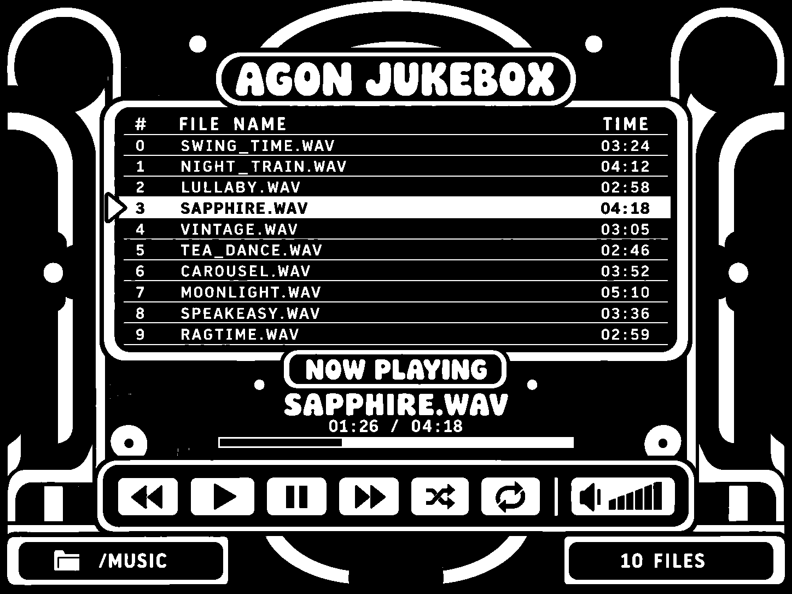
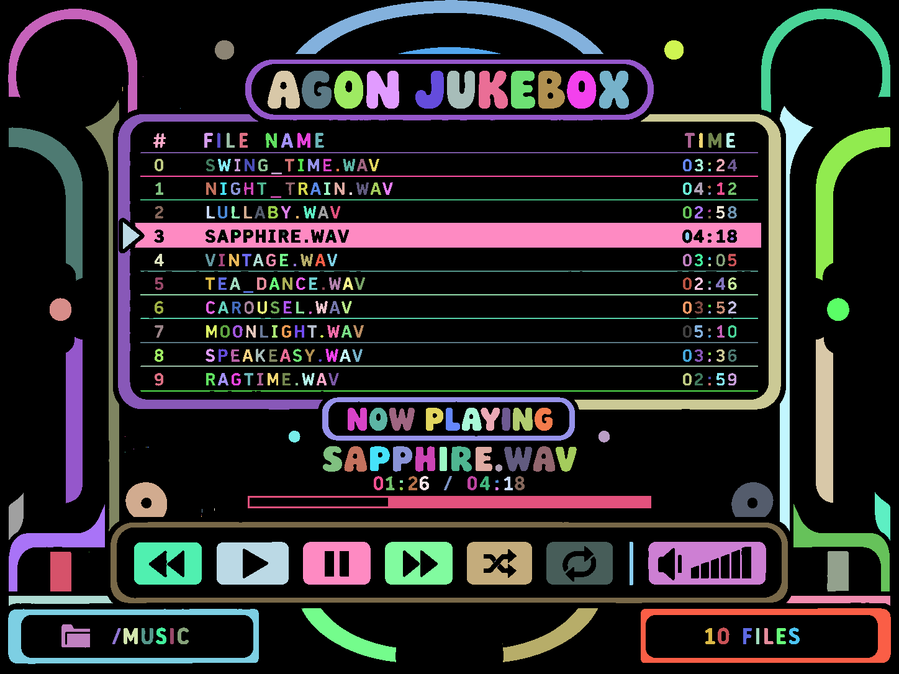
Score 97.4; 396 useful regions; 60 tiny regions; white 40.2%.
Full-resolution binary PNG · Grayscale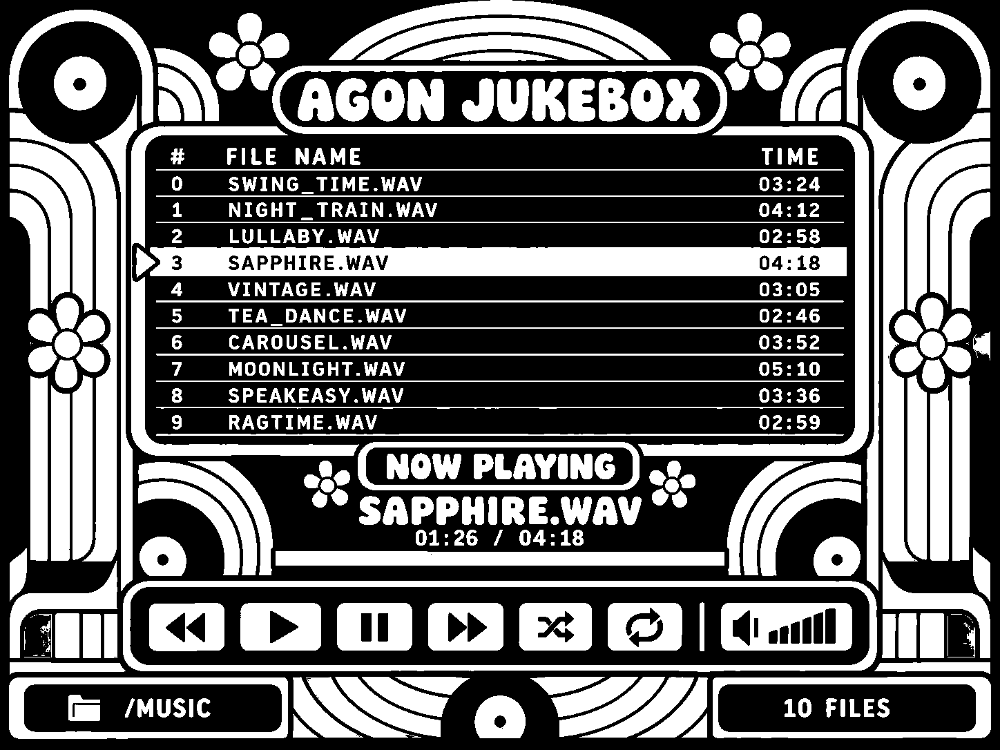
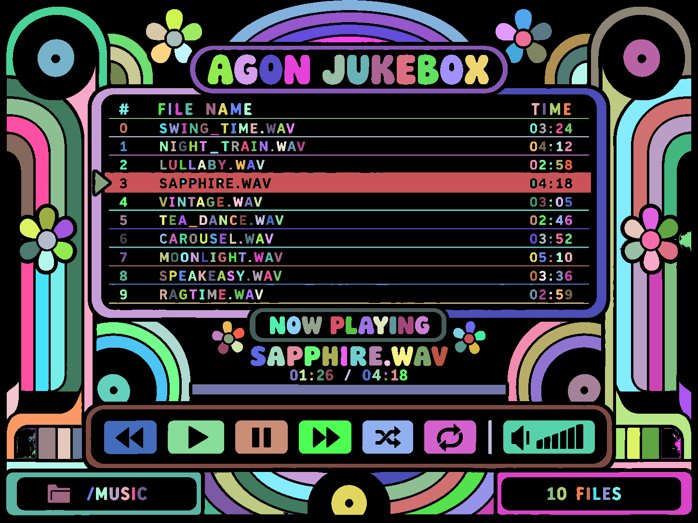
Score 93.2; 419 useful regions; 201 tiny regions; white 53.5%.
Full-resolution binary PNG · Grayscale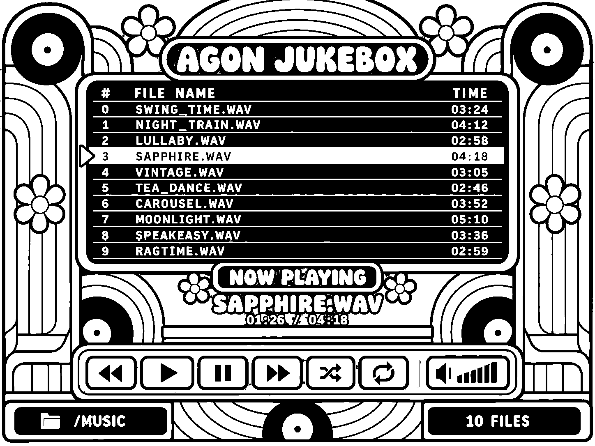
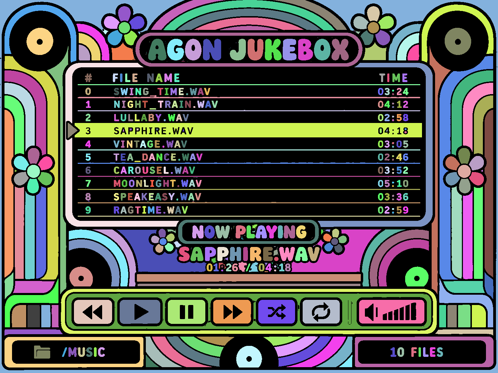
Score 93.1; 325 useful regions; 201 tiny regions; white 28.9%.
Full-resolution binary PNG · Grayscale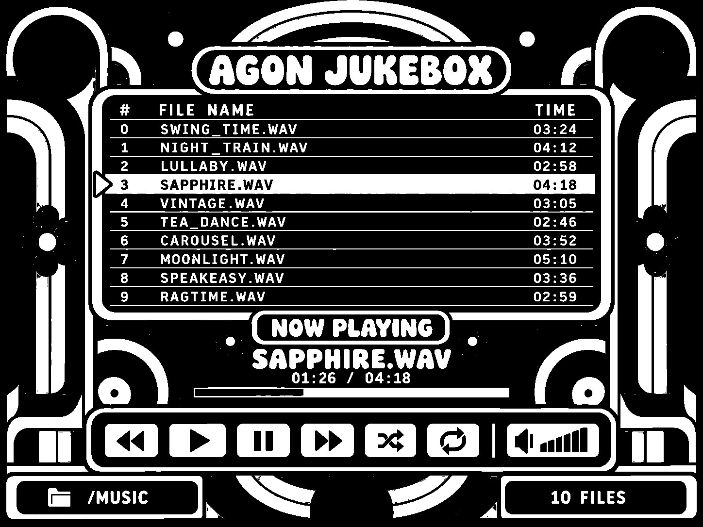
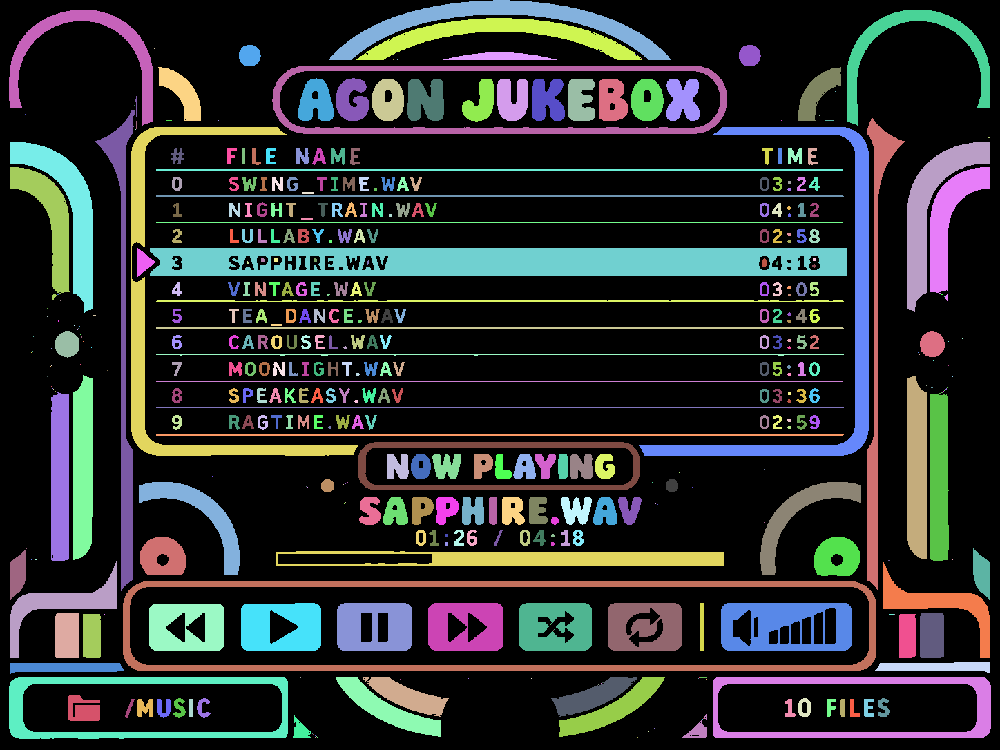